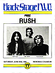

|
June 20, 1981 Memorial Coliseum. Portland, OR
 Taken from a promo pamphlet given out by KGON FM in Portland
IN OCTOBER OF 1980 RUSH'S MOST ELABORATE VENTURE BEGAN,
THE RECORDING OF MOVING PICTURES.
...DATELINE: NEW YORK CITY, MAY 9, 1980
"IN THE MIDST OF A CROWDED BACKSTAGE SCENE, FOLLOWING THE
SECOND OF OUR FOUR NIGHTS AT THE PALLADIUM, A FEW QUIET WORDS
OF AGREEMENT BECAME THE UNLIKELY CONCEPTION OF MOVINGIN PICTURES." Neil Peart
IN FEBRUARY OF 1981 MUSIC LISTENERS ACROSS THE WORLD HAD
ACCESS TO MOVING PICTURES AND RUSH BEGAN YET ANOTHER SWEEP OF
AMERICAN CONCERT HALLS.
"IT BECOMES INCREASINGLY APPARENT TO US JUST HOW VALUABLE
TOURING IS, PRIMARILY IN OUR DEVELOPMENT AS INDIVIDUAL MUSICIANS,
WHICH IN TURN DIRECTS THE PROGRESSION OF OUR MUSIC." Neil Peart
YOU PEOPLE GATHERED HERE ON THIS EVENING OF JUNE 20th, 1981
ARE PART OF THE ROCK HISTORY THAT MAKES RUSH WHAT IT IS.
THE MUSIC SPEAKS FOR ITSELF.
1. "Tom Sawyer", although written by Pye Dubois of Max Webster's
group, grew from a little melody that Geddy had been using to set
up his synthesizers at sound checks.
2. "Red Barchetta", with only a few runs to get the sounds
together, was to be the rarest animal of all, a one-take wonder.
3. "YYZ" is the identity code used by Toronto International
Airport and the intro is taken from the Morse Code which is sent
out by the beacon there.
4. "Vital Signs" was the ultimate result, eclectic in the
extreme, it embraces a wide variety of stylistic influences,
ranging from the sixties to the present.
5. "Witch Hunt" was the winner of the album's most re-written
song award.
6. "Limelight" was achieved through relentless grinding.
7. "The Camera Eye" was the first song written and the
one that most parallels the title.
|
{kind=link}
{kind=link}